Дизайн — це творчий метод, процес і результат художньо-технічного проєктування промислових виробів, їхніх комплексів і систем, орієнтований на досягнення найповнішої відповідності створюваних об'єктів і середовища загалом потребам людини, як утилітарних, так і естетичних.Об'єктом дизайну може стати практично будь-який новий технічний промисловий виріб (комплект, ансамбль, комплекс, система) в будь-якій сфері життєдіяльності людей. Основні категорії об'єкта дизайну: Образ — ідеальне уявлення про об'єкт, художньо-образна модель, створена уявою дизайнера. Функція — робота, яку повинен виконувати виріб, а також смислова, знакова і ціннісна ролі речі. Морфологія — будова, структура форми виробу, організована відповідно до його функції, матеріалом і способом виготовлення, що втілює задум дизайнера. Технологічна форма — морфологія, втілена в способі промислового виробництва речі-об'єкту дизайн-проєктування в результаті художнього осмислення технології. Естетична цінність — особливе значення об'єкту, що виявляється людиною в ситуації естетичного сприйняття, емоційного, чуттєвого переживання та оцінки ступеня відповідності об'єкту естетичному ідеалу суб'єкта. Існує багато видів дизайну, сьогодні поговоримо про декілька з них.
- Дизайн інтер'єру
- Дизайн середовища
- Промисловий дизайн
- Рекламний дизайн
- Дизайн одягу
- Графічний дизайн
Види дизайну
Дизайн інтер'єру
Це галузь дизайну, спрямована на інтер'єр приміщень з метою забезпечити зручність і естетично приємну взаємодію середовища з людьми. Інтер'єрний дизайн поєднує в собі художній та промисловий дизайн. Дизайнер виконує оптимізацію праці в приміщенні, покращує навігацію у великих приміщеннях, розробляє оформлення спеціалізованих приміщень відповідно до вимог клієнтів.
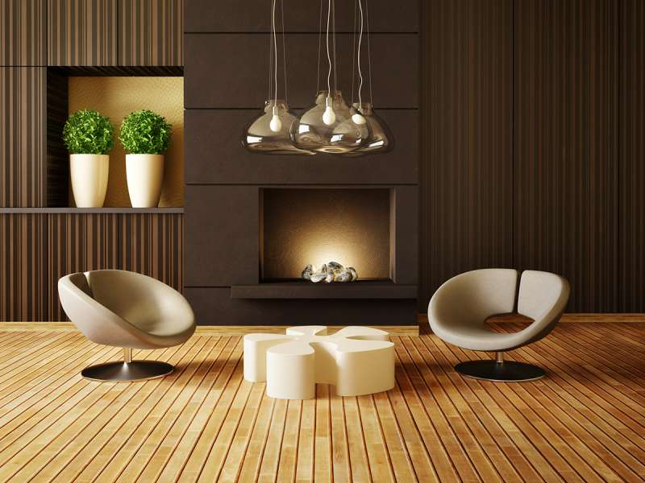 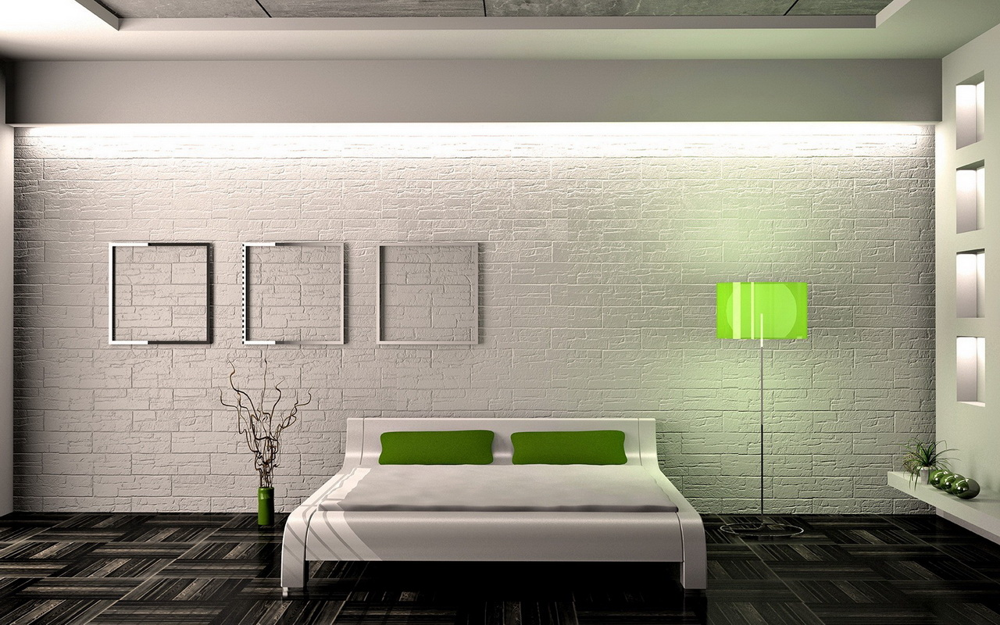 
Дизайн середовища
Дизайн середовища є професійною проектно-художньою діяльністю у сфері створення відкритих, напіввідкритих та закритих просторів. Це робота з міським громадським і природним середовищем, внутрішньо будинковими територіями, терасами, виробничими та житловими інтер’єрами. Вона включає в себе розробку: ландшафтних ділянок та композицій, ансамблів малих архітектурних форм та міського обладнання, функціонально-естетичного вирішення приміщень та їх предметного наповнення.
 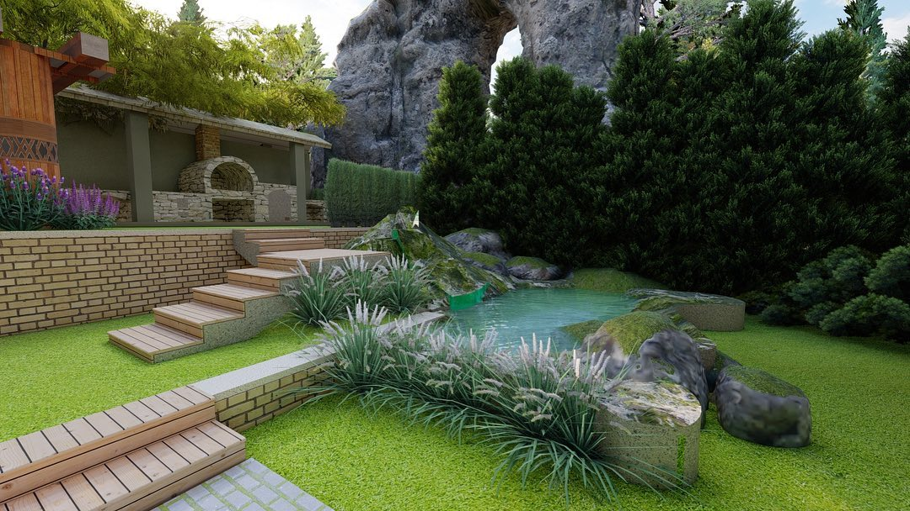 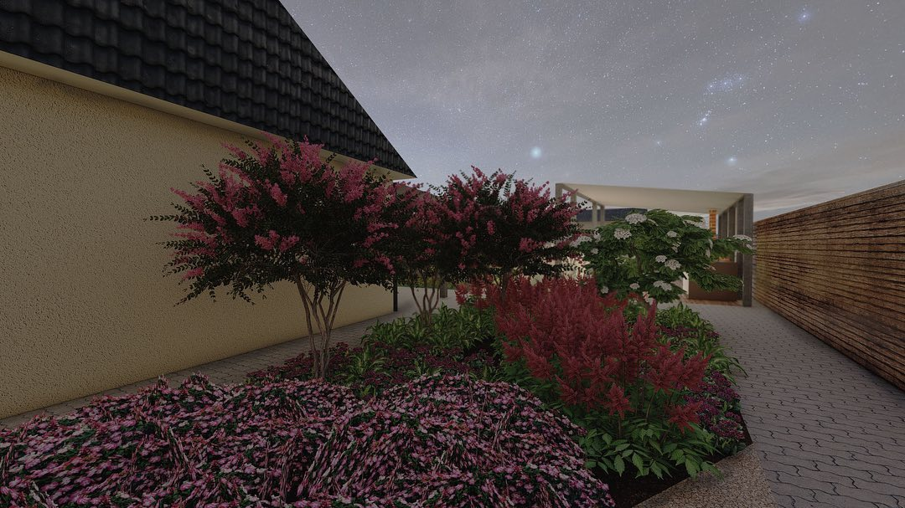
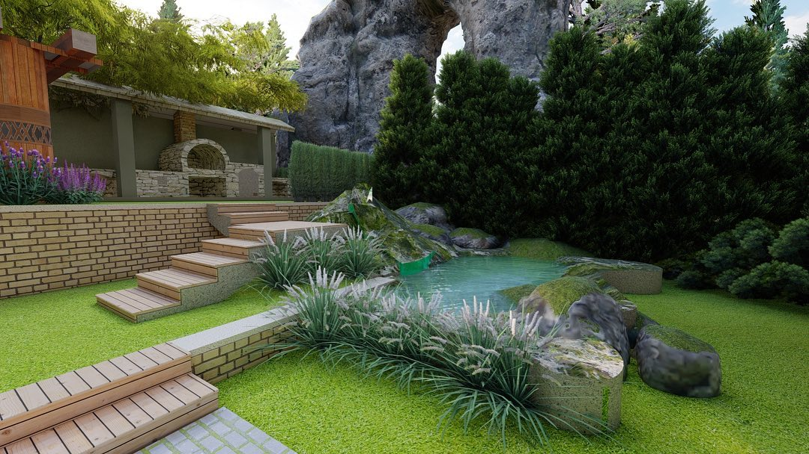 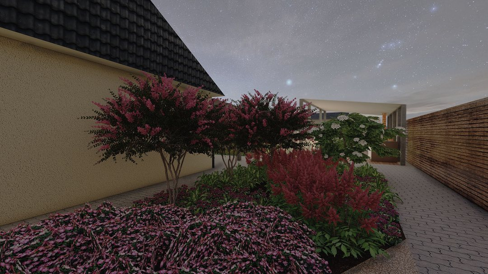
Промисловий дизайн
Промисловий дизайн являє собою процес проєктування товарів, які повинно бути виготовлено за допомогою технології масового виробництва. Його ключовою характеристикою є те, що конструювання відокремлено від виробництва: творчий акт визначення остаточного вигляду продукту і його особливостей, відбувається заздалегідь, перед його фізичним виготовленням, яке складається винятково з повторень, часто автоматизованих. Це відрізняє промислову розробку, від ремесла на основі дизайну, де вигляд продукту визначається творцем товару, під час його створення.
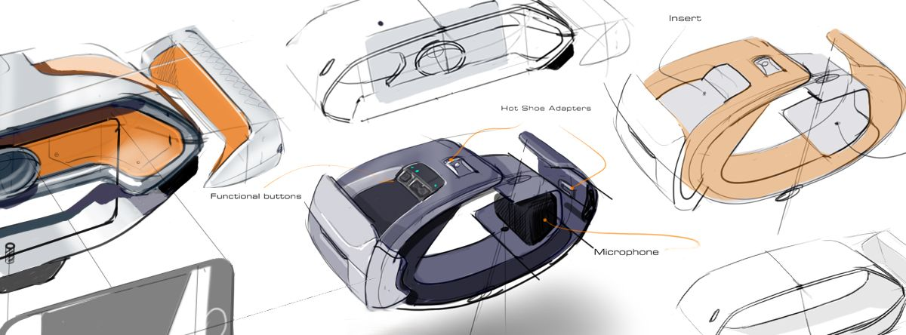 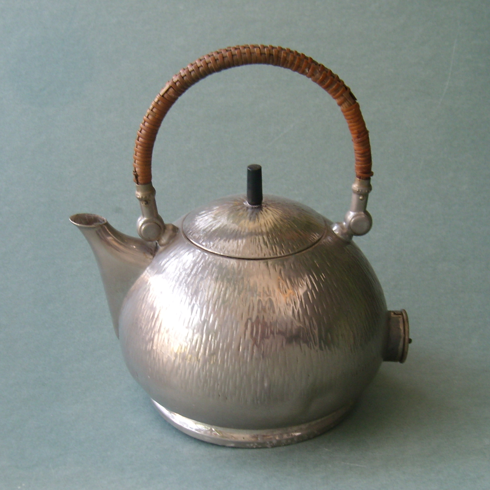 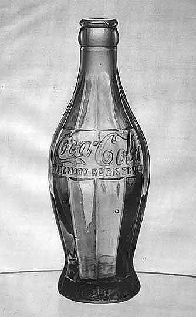 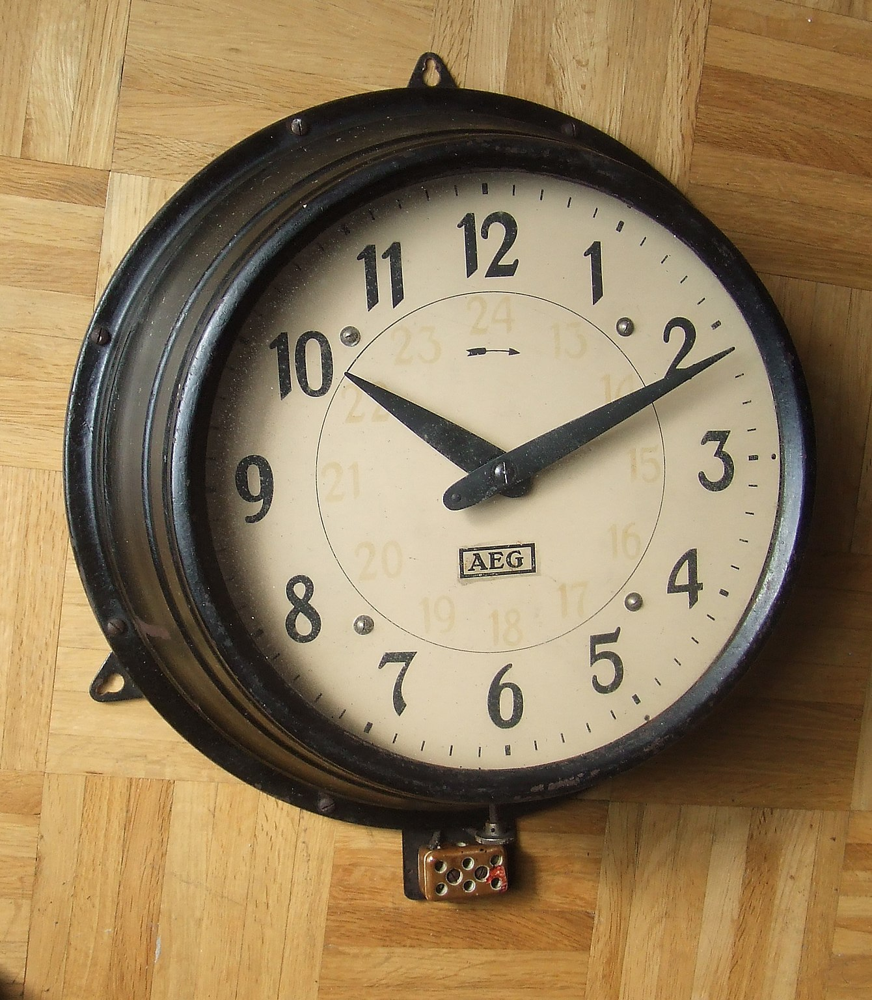
Рекламний дизайн
Рекламний дизайн в процесі розробки рекламної кампанії важко переоцінити. Мало придумати свіжу і яскраву ідею – потрібна ідея, що продає продукт. Візуальну реалізацію правильної рекламної ідеї забезпечує дизайн. Тому існує думка, що саме дизайнери створюють рекламу. Цікаво, що такої думки дотримуються не тільки певна частина замовників, а й деякі дизайнери. Однак завдання цих фахівців полягає в тому, щоб перетворити довгі речення рекламної стратегії в зрозумілий і приємний споживачеві візуальний образ, що не відволікаючий від рекламного посилання. Нерідко виникають ситуації, коли якісна картинка повністю затьмарює сам товар.
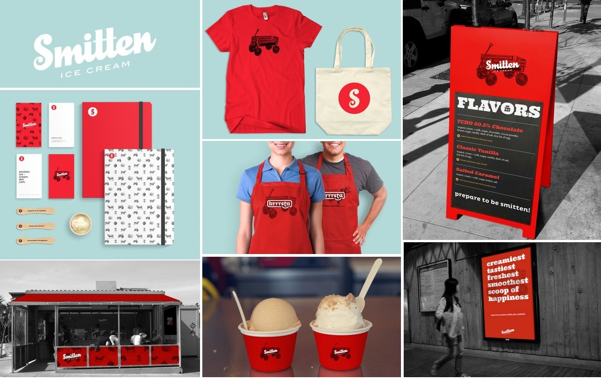 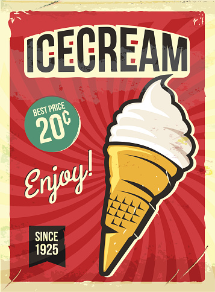 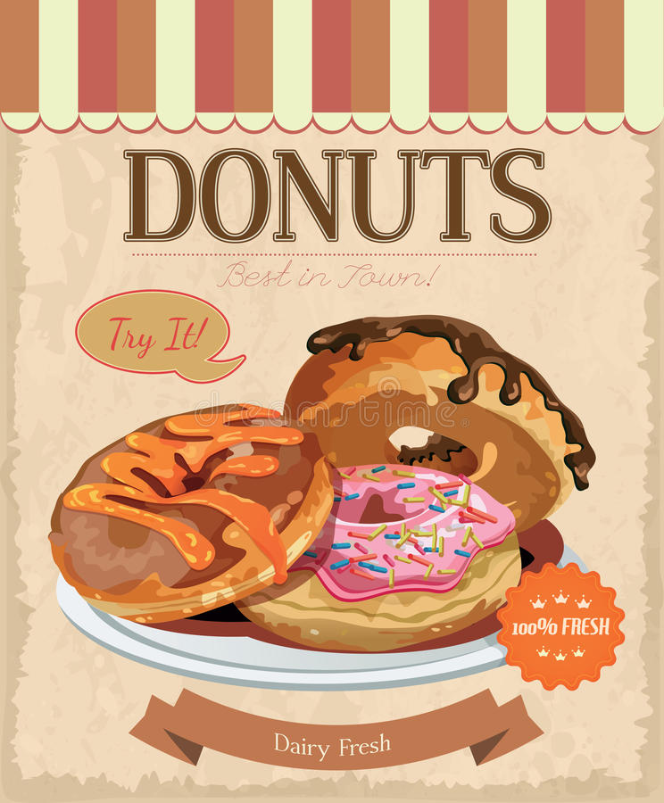
Дизайн одягу
Дизайн одягу - це один з напрямків творчої діяльності, метою якої є проектування комфортного, функціонально оправданого, естетично цілісного одягу, як одного з елементів предметного середовища, який відповідає відповідним матеріальним та духовним вимогам споживача.Дизайн одягу відрізняється від дизайну костюмів тим, що його виробництво зазвичай здійснюється протягом одного-двох сезонів. "Сезон" у моді визначається як осінь/зима або весна/літо. Початком модного дизайну прийнято вважати 19 століття, коли Чарльз Фредерік пришив ярлик виробника на одяг, який він розробляв. Хоча всі види одягу протягом історії вивчаються академіками в галузі дизайну костюма, тільки одяг, створений після 1858 року, входить до дизайну одягу.
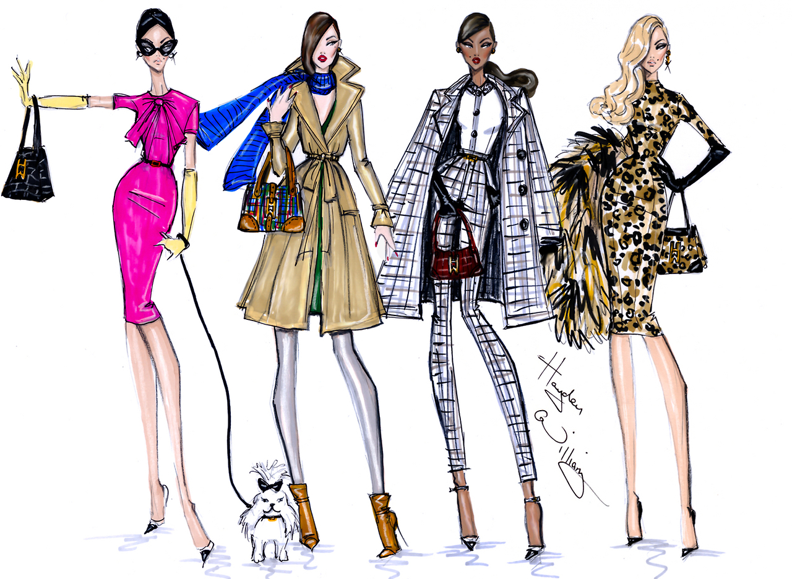 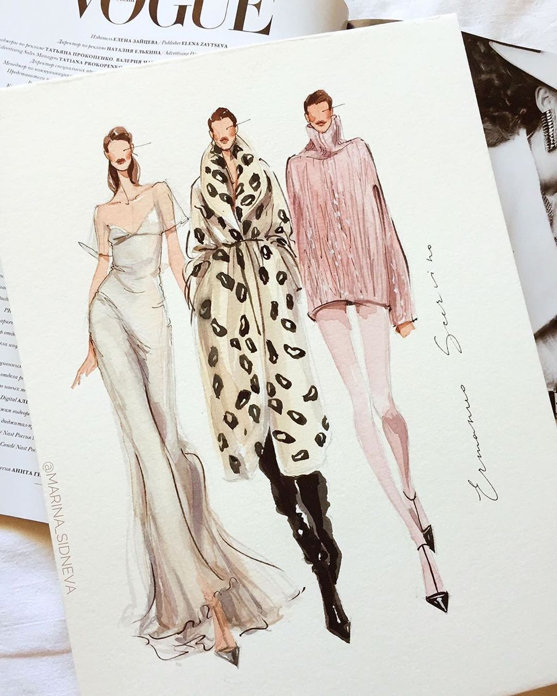 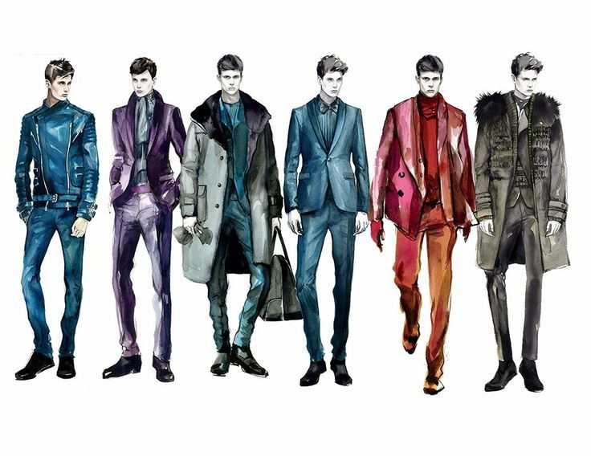
Графічний дизайн
Графічний дизайн — це вид сучасного мистецтва, який полягає в створенні графічних об'єктів (листівок, логотипів, візиток, веб-сайтів) за допомогою різних видів графіки. Головна ідея графічного дизайну — з'єднати естетичні принципи і функціональні завдання в одному виконанні.Роль графічного дизайнера в комунікаційному процесі — це кодер або інтерпретатор повідомлень. Вони працюють над інтерпретацією, упорядкуванням і презентацією візуальних повідомлень. Дизайнерська робота може бути заснована на запиті замовника, попиті тощо, тобто графічний дизайн перетворює мовне повідомлення в графічний прояв. Графічний дизайн як область застосування має різні галузі знань, орієнтовані на будь-яку систему візуальних комунікацій. Наприклад, його можна застосувати в рекламі або в авіаційному дизайні або дослідженні космосу.
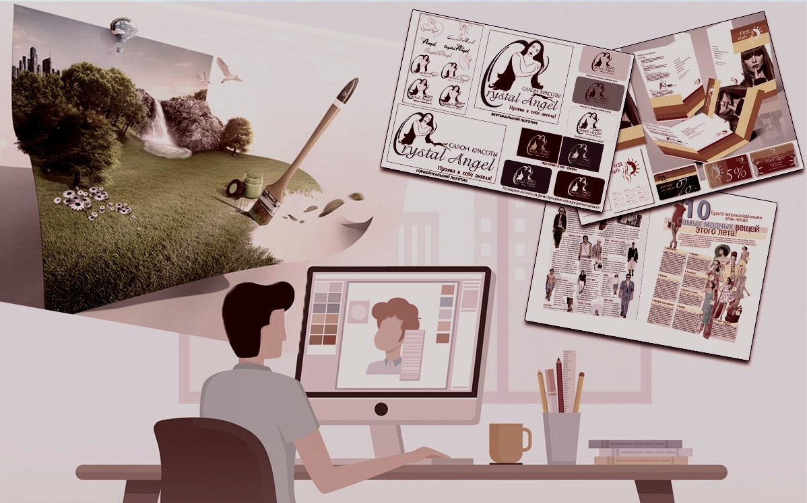 
Для роботи дизайнером треба мати певні навички:
Вид дизайну |
Необхідні навички |
| Дизайн інтер'єру | Креативність і увага до деталей, критичне мислення, вміння “йти з трендами у ногу”, навички роботи з комп’ютером |
| Дизайн середовища | просторова уява; розвинений художній смак; креативне мислення; вміння створювати інтер`єр за словесним описом; увага до деталей; абстрактне мислення; почуття стилю, гармонії і симетрії; комунікабельність |
| Промисловий дизайн | розробка і моделювання об'єктів для зручного користування |
| Рекламний дизайн | вміння працювати у графічних програмах; творче мислення; уміння відстоювати свої ідеї |
| Дизайн одягу | високохудожній та естетичний смак; почуття стилю; творче мислення; розвинена уява та образне мислення; вміння або здібності до малювання; зорова пам'ять; концептуальне мислення; креативність; ініціативність; винахідливість; комунікабельність; здатність до самовдосконалення і розвитку; доброзичливість, тактовність; працьовитість; старанність та ретельність |
| Графічний дизайн | базові художні навички; знання історії та теорії графічного дизайну; вміння працювати з графічними редакторами |